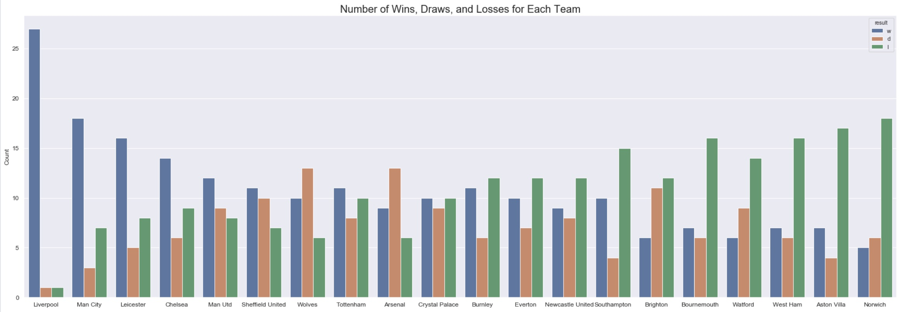
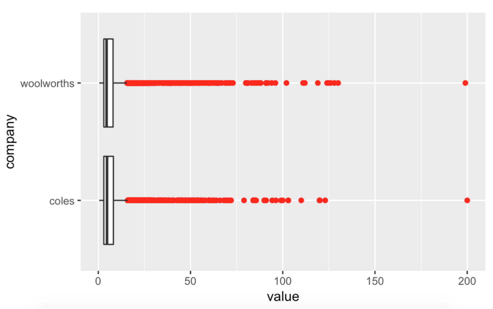
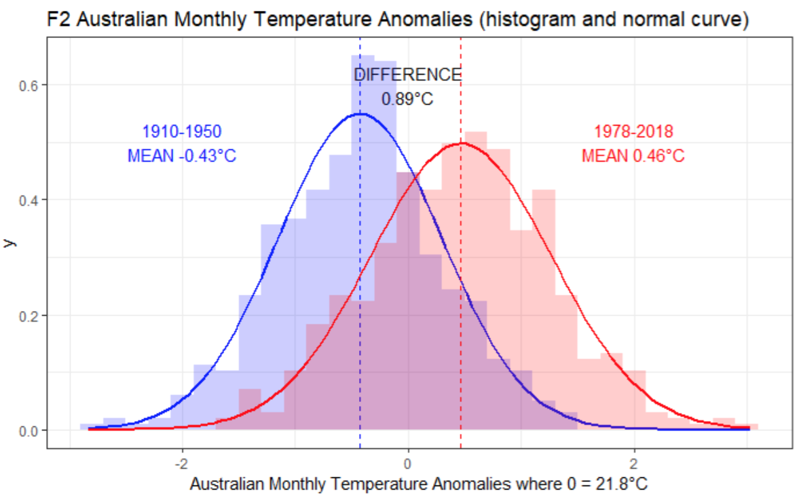
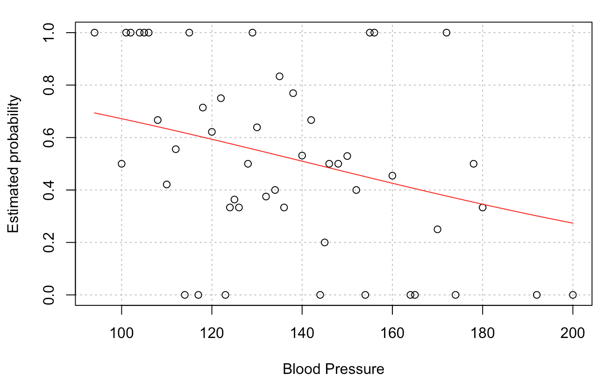
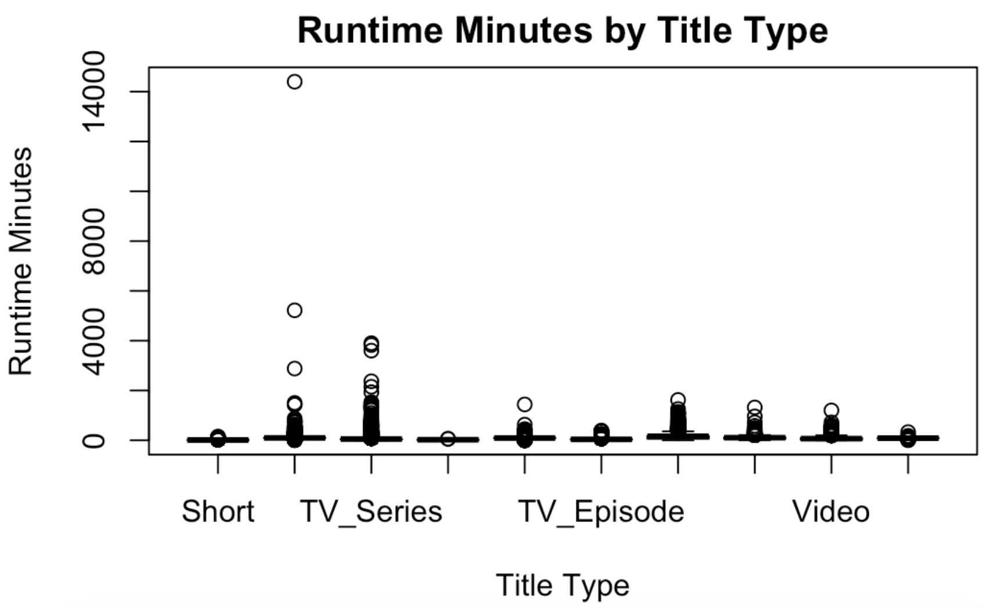

This project aimed at building an accurate classification model which can predict the outcome of football (soccer) matches based on relevant statistics. A decision tree model was found to be the most accurate among the various machine learning algorithms fitted to the data. This project was written in a Jupyter Notebook using Python and the following packages: Pandas, Numpy, Seaborn, and Scikit-Learn.


This project set out to determine if there was a statistically significant difference in the mean price between products sold at coles and woolworths supermarkets. When taken as a whole, a paired-samples t-test did not find evidence of a statistically significant difference between the two supermarket chains however, the analysis did find a significance difference in the prices of products in some categories. It was concluded that the prices between Coles and Woolworths are kept close together due to competition and that since the supermarkets change their prices daily, the findings could not be used to predict which store would be cheaper on any given day.

Given the scientific consensus that our climate is changing unusually rapidly, I set out to determine if there was a statistically significant difference in Australia’s mean annual temperature over the past 100 years. A two sample t.test was used to show that the mean temperature from 1910-1950 differs from the mean temperature from 1978-2018 by 0.894°C. A least squares fit linear regression model between Year and Temperature was fit to the data which was then used to predict at what year we will see a global warming of 1.5°C. The linear model predicted this to be in the year 2084.

This project set out to construct a statistical model which can determine the probability of being diagnosed with heart disease based on certain personal health information. This was done by fitting a logistic regression model to the data. The study found, among other things, that for every ten unit increase in resting blood pressure, the odds of being diagnosed with heart disease increase by 1.18 times. The analysis was able to find relationships between certain attributes in the data and the diagnosis of heart disease.

The aim of this project was simply to pre-process the International Movie Database (IMDb) data. This project was done in RStudio and involved common data science processes such as correctly dealing with missing values, handling outliers, checking for correct data types, checking for unusual values, creating new variables, and analysis of key summary statistics.